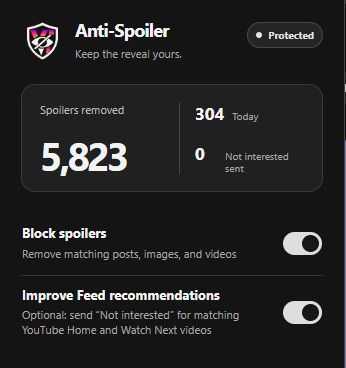

Keep GTA 6
a surprise.

Start with what you want hidden.
Copy these terms into the filters below. Keep only the names you want to avoid seeing.
Spoiler keywords
Tip: broad words such as “ending” may hide unrelated posts too. Remove them if you prefer a lighter filter.
A quieter feed, app by app.
These controls help reduce accidental spoilers on the platforms where you scroll.
XMute the words in your Home timeline and notifications.
- Open Settings and privacy → Privacy and safety → Mute and block → Muted words.
- Add each phrase from the starter list.
- Choose Home timeline and Notifications, then set the duration to Forever if you want the filter to stay.
Muted words may still appear in search or in places X does not filter. Avoid searching for the game if you want zero previews.
InstagramFilter suggested posts and steer topic recommendations.
- Open your profile menu → Content preferences → Specific words and phrases. Add the GTA 6 terms you want hidden from suggested posts.
- Go back to Content preferences → Your algorithm → What you want to see less of → Add. Add GTA 6 as a topic, if this control is available in your app.
- On a post that slips through, open its menu and choose Not interested.
“Specific words and phrases” targets matching text in recommended posts. “Your algorithm” adjusts topics; it is not a strict block. Availability varies by surface and region. The separate Hidden Words controls for comments and messages serve a different purpose.
Meta on suggested-post word controls · Meta on Your Algorithm
TikTokGive your video feed the same keyword list.
- Open Profile → Menu → Settings and privacy → Content preferences → Filter keywords.
- Add the starter terms and select the feeds you want filtered.
- Use Not interested on any matching video that still appears.
Keyword filtering depends on the text TikTok can identify for a video; images and speech without matching metadata may still get through.
YouTubeTrain recommendations that keep surfacing the game.
- On a matching recommendation, open the ⋮ menu and choose Not interested.
- If a channel repeatedly posts spoilers, choose Don’t recommend channel where available.
- Remove watched spoiler videos from your YouTube history if they are influencing your recommendations.
These choices may reduce future recommendations on your signed-in account, but they do not instantly block every matching video or thumbnail.
Catch what the apps miss.
GTA 6 Anti-Spoiler removes matching posts, images, and search results across websites you browse in Chrome. It works locally in your browser, and you can pause blocking from the popup.